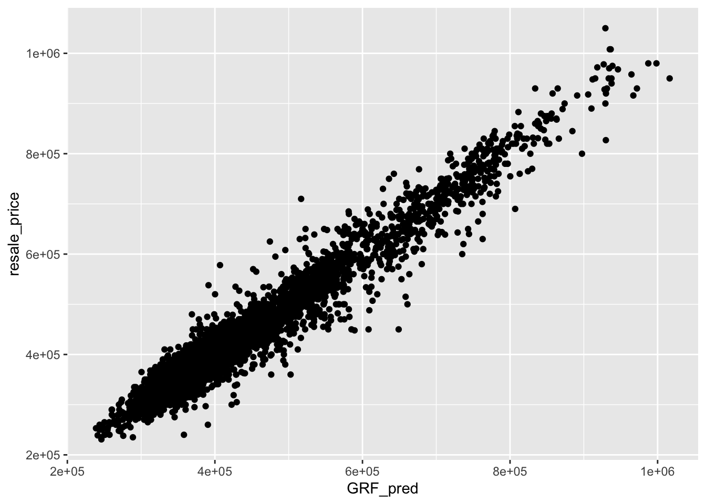

pacman::p_load(sf, spdep, GWmodel, SpatialML,
tmap, rsample, Metrics, tidyverse)Hands-On Exercise 9: Geographically Weighted Predictive Models
Hands-On Exercise
Geographically Weighted Predictive Models
Dependencies
Wrangling
Load Data
mdata <- read_rds("data/aspatial/mdata.rds")Sampling
set.seed(1234)
resale_split <- initial_split(mdata,
prop = 6.5/10,)
train_data <- training(resale_split)
test_data <- testing(resale_split)
write_rds(train_data, "data/model/train_data.rds")
write_rds(test_data, "data/model/test_data.rds")
train_data <- read_rds("data/model/train_data.rds")
test_data <- read_rds("data/model/test_data.rds")Correlation Matrix
mdata_nogeo <- mdata %>%
st_drop_geometry()
corrplot::corrplot(cor(mdata_nogeo[, 2:17]),
diag = FALSE,
order = "AOE",
tl.pos = "td",
tl.cex = 0.5,
method = "number",
type = "upper")
Building non-spatital MLR
price_mlr <- lm(resale_price ~ floor_area_sqm +
storey_order + remaining_lease_mths +
PROX_CBD + PROX_ELDERLYCARE + PROX_HAWKER +
PROX_MRT + PROX_PARK + PROX_MALL +
PROX_SUPERMARKET + WITHIN_350M_KINDERGARTEN +
WITHIN_350M_CHILDCARE + WITHIN_350M_BUS +
WITHIN_1KM_PRISCH,
data=train_data)
summary(price_mlr)
Call:
lm(formula = resale_price ~ floor_area_sqm + storey_order + remaining_lease_mths +
PROX_CBD + PROX_ELDERLYCARE + PROX_HAWKER + PROX_MRT + PROX_PARK +
PROX_MALL + PROX_SUPERMARKET + WITHIN_350M_KINDERGARTEN +
WITHIN_350M_CHILDCARE + WITHIN_350M_BUS + WITHIN_1KM_PRISCH,
data = train_data)
Residuals:
Min 1Q Median 3Q Max
-205193 -39120 -1930 36545 472355
Coefficients:
Estimate Std. Error t value Pr(>|t|)
(Intercept) 107601.073 10601.261 10.150 < 2e-16 ***
floor_area_sqm 2780.698 90.579 30.699 < 2e-16 ***
storey_order 14299.298 339.115 42.167 < 2e-16 ***
remaining_lease_mths 344.490 4.592 75.027 < 2e-16 ***
PROX_CBD -16930.196 201.254 -84.124 < 2e-16 ***
PROX_ELDERLYCARE -14441.025 994.867 -14.516 < 2e-16 ***
PROX_HAWKER -19265.648 1273.597 -15.127 < 2e-16 ***
PROX_MRT -32564.272 1744.232 -18.670 < 2e-16 ***
PROX_PARK -5712.625 1483.885 -3.850 0.000119 ***
PROX_MALL -14717.388 2007.818 -7.330 2.47e-13 ***
PROX_SUPERMARKET -26881.938 4189.624 -6.416 1.46e-10 ***
WITHIN_350M_KINDERGARTEN 8520.472 632.812 13.464 < 2e-16 ***
WITHIN_350M_CHILDCARE -4510.650 354.015 -12.741 < 2e-16 ***
WITHIN_350M_BUS 813.493 222.574 3.655 0.000259 ***
WITHIN_1KM_PRISCH -8010.834 491.512 -16.298 < 2e-16 ***
---
Signif. codes: 0 '***' 0.001 '**' 0.01 '*' 0.05 '.' 0.1 ' ' 1
Residual standard error: 61650 on 10320 degrees of freedom
Multiple R-squared: 0.7373, Adjusted R-squared: 0.737
F-statistic: 2069 on 14 and 10320 DF, p-value: < 2.2e-16write_rds(price_mlr, "data/model/price_mlr.rds" ) GWR Predictive Model
SF to SpatialPointDataFrame
train_data_sp <- train_data %>% as_Spatial()
test_data_sp <- test_data %>% as_Spatial()Computing Adaptive Bandwidth
bw_adaptive <- bw.gwr(resale_price ~ floor_area_sqm +
storey_order + remaining_lease_mths +
PROX_CBD + PROX_ELDERLYCARE + PROX_HAWKER +
PROX_MRT + PROX_PARK + PROX_MALL +
PROX_SUPERMARKET + WITHIN_350M_KINDERGARTEN +
WITHIN_350M_CHILDCARE + WITHIN_350M_BUS +
WITHIN_1KM_PRISCH,
data=train_data_sp,
approach="CV",
kernel="gaussian",
adaptive=TRUE,
longlat=FALSE)Take a cup of tea and have a break, it will take a few minutes.
-----A kind suggestion from GWmodel development group
Adaptive bandwidth: 6395 CV score: 3.60536e+13
Adaptive bandwidth: 3960 CV score: 3.320316e+13
Adaptive bandwidth: 2455 CV score: 2.928339e+13
Adaptive bandwidth: 1524 CV score: 2.550957e+13
Adaptive bandwidth: 950 CV score: 1.95632e+13
Adaptive bandwidth: 593 CV score: 1.58347e+13
Adaptive bandwidth: 375 CV score: 1.310042e+13
Adaptive bandwidth: 237 CV score: 1.113152e+13
Adaptive bandwidth: 155 CV score: 9.572037e+12
Adaptive bandwidth: 101 CV score: 8.457003e+12
Adaptive bandwidth: 71 CV score: 7.605058e+12
Adaptive bandwidth: 49 CV score: 6.966278e+12
Adaptive bandwidth: 38 CV score: 8.841916e+12
Adaptive bandwidth: 58 CV score: 7.275234e+12
Adaptive bandwidth: 45 CV score: 6.871966e+12
Adaptive bandwidth: 41 CV score: 6.793327e+12
Adaptive bandwidth: 40 CV score: 6.780974e+12
Adaptive bandwidth: 38 CV score: 8.841916e+12
Adaptive bandwidth: 40 CV score: 6.780974e+12 write_rds(bw_adaptive, "data/model/bw_adaptive.rds")Constructing Adaptive Bandwidth GWR Model
bw_adaptive <- read_rds("data/model/bw_adaptive.rds")
gwr_adaptive <- gwr.basic(formula = resale_price ~
floor_area_sqm + storey_order +
remaining_lease_mths + PROX_CBD +
PROX_ELDERLYCARE + PROX_HAWKER +
PROX_MRT + PROX_PARK + PROX_MALL +
PROX_SUPERMARKET + WITHIN_350M_KINDERGARTEN +
WITHIN_350M_CHILDCARE + WITHIN_350M_BUS +
WITHIN_1KM_PRISCH,
data=train_data_sp,
bw=bw_adaptive,
kernel = 'gaussian',
adaptive=TRUE,
longlat = FALSE)
write_rds(gwr_adaptive, "data/model/gwr_adaptive.rds")
gwr_adaptive <- read_rds("data/model/gwr_adaptive.rds")Showing Model Output
gwr_adaptive ***********************************************************************
* Package GWmodel *
***********************************************************************
Program starts at: 2024-03-17 00:39:17.512467
Call:
gwr.basic(formula = resale_price ~ floor_area_sqm + storey_order +
remaining_lease_mths + PROX_CBD + PROX_ELDERLYCARE + PROX_HAWKER +
PROX_MRT + PROX_PARK + PROX_MALL + PROX_SUPERMARKET + WITHIN_350M_KINDERGARTEN +
WITHIN_350M_CHILDCARE + WITHIN_350M_BUS + WITHIN_1KM_PRISCH,
data = train_data_sp, bw = bw_adaptive, kernel = "gaussian",
adaptive = TRUE, longlat = FALSE)
Dependent (y) variable: resale_price
Independent variables: floor_area_sqm storey_order remaining_lease_mths PROX_CBD PROX_ELDERLYCARE PROX_HAWKER PROX_MRT PROX_PARK PROX_MALL PROX_SUPERMARKET WITHIN_350M_KINDERGARTEN WITHIN_350M_CHILDCARE WITHIN_350M_BUS WITHIN_1KM_PRISCH
Number of data points: 10335
***********************************************************************
* Results of Global Regression *
***********************************************************************
Call:
lm(formula = formula, data = data)
Residuals:
Min 1Q Median 3Q Max
-205193 -39120 -1930 36545 472355
Coefficients:
Estimate Std. Error t value Pr(>|t|)
(Intercept) 107601.073 10601.261 10.150 < 2e-16 ***
floor_area_sqm 2780.698 90.579 30.699 < 2e-16 ***
storey_order 14299.298 339.115 42.167 < 2e-16 ***
remaining_lease_mths 344.490 4.592 75.027 < 2e-16 ***
PROX_CBD -16930.196 201.254 -84.124 < 2e-16 ***
PROX_ELDERLYCARE -14441.025 994.867 -14.516 < 2e-16 ***
PROX_HAWKER -19265.648 1273.597 -15.127 < 2e-16 ***
PROX_MRT -32564.272 1744.232 -18.670 < 2e-16 ***
PROX_PARK -5712.625 1483.885 -3.850 0.000119 ***
PROX_MALL -14717.388 2007.818 -7.330 2.47e-13 ***
PROX_SUPERMARKET -26881.938 4189.624 -6.416 1.46e-10 ***
WITHIN_350M_KINDERGARTEN 8520.472 632.812 13.464 < 2e-16 ***
WITHIN_350M_CHILDCARE -4510.650 354.015 -12.741 < 2e-16 ***
WITHIN_350M_BUS 813.493 222.574 3.655 0.000259 ***
WITHIN_1KM_PRISCH -8010.834 491.512 -16.298 < 2e-16 ***
---Significance stars
Signif. codes: 0 '***' 0.001 '**' 0.01 '*' 0.05 '.' 0.1 ' ' 1
Residual standard error: 61650 on 10320 degrees of freedom
Multiple R-squared: 0.7373
Adjusted R-squared: 0.737
F-statistic: 2069 on 14 and 10320 DF, p-value: < 2.2e-16
***Extra Diagnostic information
Residual sum of squares: 3.922202e+13
Sigma(hat): 61610.08
AIC: 257320.2
AICc: 257320.3
BIC: 247249
***********************************************************************
* Results of Geographically Weighted Regression *
***********************************************************************
*********************Model calibration information*********************
Kernel function: gaussian
Adaptive bandwidth: 40 (number of nearest neighbours)
Regression points: the same locations as observations are used.
Distance metric: Euclidean distance metric is used.
****************Summary of GWR coefficient estimates:******************
Min. 1st Qu. Median 3rd Qu.
Intercept -3.2594e+08 -4.7727e+05 -8.3004e+03 5.5025e+05
floor_area_sqm -2.8714e+04 1.4475e+03 2.3011e+03 3.3900e+03
storey_order 3.3186e+03 8.5899e+03 1.0826e+04 1.3397e+04
remaining_lease_mths -1.4431e+03 2.6063e+02 3.9048e+02 5.2865e+02
PROX_CBD -1.0837e+07 -5.7697e+04 -1.3787e+04 2.6552e+04
PROX_ELDERLYCARE -3.2291e+07 -4.0643e+04 1.0562e+04 6.1054e+04
PROX_HAWKER -2.3985e+08 -5.1365e+04 3.0026e+03 6.4287e+04
PROX_MRT -1.1660e+07 -1.0488e+05 -4.9373e+04 5.1037e+03
PROX_PARK -6.5961e+06 -4.8671e+04 -8.8128e+02 5.3498e+04
PROX_MALL -1.8112e+07 -7.4238e+04 -1.3982e+04 4.9779e+04
PROX_SUPERMARKET -4.5761e+06 -6.3461e+04 -1.7429e+04 3.5616e+04
WITHIN_350M_KINDERGARTEN -4.1881e+05 -6.0040e+03 9.0209e+01 4.7127e+03
WITHIN_350M_CHILDCARE -1.0273e+05 -2.2375e+03 2.6668e+02 2.6388e+03
WITHIN_350M_BUS -1.1757e+05 -1.4719e+03 1.1626e+02 1.7584e+03
WITHIN_1KM_PRISCH -6.6465e+05 -5.5959e+03 2.6916e+02 5.7500e+03
Max.
Intercept 1.6493e+08
floor_area_sqm 5.0907e+04
storey_order 2.9537e+04
remaining_lease_mths 1.8119e+03
PROX_CBD 2.2489e+07
PROX_ELDERLYCARE 8.2444e+07
PROX_HAWKER 5.9654e+06
PROX_MRT 2.0189e+08
PROX_PARK 1.5224e+07
PROX_MALL 1.0443e+07
PROX_SUPERMARKET 3.8330e+06
WITHIN_350M_KINDERGARTEN 6.6799e+05
WITHIN_350M_CHILDCARE 1.0802e+05
WITHIN_350M_BUS 3.7313e+04
WITHIN_1KM_PRISCH 5.0262e+05
************************Diagnostic information*************************
Number of data points: 10335
Effective number of parameters (2trace(S) - trace(S'S)): 1730.101
Effective degrees of freedom (n-2trace(S) + trace(S'S)): 8604.899
AICc (GWR book, Fotheringham, et al. 2002, p. 61, eq 2.33): 238871.8
AIC (GWR book, Fotheringham, et al. 2002,GWR p. 96, eq. 4.22): 237036.9
BIC (GWR book, Fotheringham, et al. 2002,GWR p. 61, eq. 2.34): 238209
Residual sum of squares: 4.829177e+12
R-square value: 0.9676571
Adjusted R-square value: 0.9611535
***********************************************************************
Program stops at: 2024-03-17 00:40:13.833923 Computing Adaptive Bandwidth for Test Data
gwr_bw_test_adaptive <- bw.gwr(resale_price ~ floor_area_sqm +
storey_order + remaining_lease_mths +
PROX_CBD + PROX_ELDERLYCARE + PROX_HAWKER +
PROX_MRT + PROX_PARK + PROX_MALL +
PROX_SUPERMARKET + WITHIN_350M_KINDERGARTEN +
WITHIN_350M_CHILDCARE + WITHIN_350M_BUS +
WITHIN_1KM_PRISCH,
data=test_data_sp,
approach="CV",
kernel="gaussian",
adaptive=TRUE,
longlat=FALSE)Take a cup of tea and have a break, it will take a few minutes.
-----A kind suggestion from GWmodel development group
Adaptive bandwidth: 3447 CV score: 1.902155e+13
Adaptive bandwidth: 2138 CV score: 1.752645e+13
Adaptive bandwidth: 1328 CV score: 1.556299e+13
Adaptive bandwidth: 828 CV score: 1.357498e+13
Adaptive bandwidth: 518 CV score: 1.030751e+13
Adaptive bandwidth: 327 CV score: 8.348364e+12
Adaptive bandwidth: 208 CV score: 6.860544e+12
Adaptive bandwidth: 135 CV score: 5.969504e+12
Adaptive bandwidth: 89 CV score: 5.242221e+12
Adaptive bandwidth: 62 CV score: 4.742767e+12
Adaptive bandwidth: 43 CV score: 4.357839e+12
Adaptive bandwidth: 34 CV score: 4.125848e+12
Adaptive bandwidth: 25 CV score: 4.056699e+12
Adaptive bandwidth: 23 CV score: 4.236349e+13
Adaptive bandwidth: 30 CV score: 4.074906e+12
Adaptive bandwidth: 25 CV score: 4.056699e+12 Computing Predicted Values for Test Data
# gwr_pred <- gwr.predict(formula = resale_price ~
# floor_area_sqm + storey_order +
# remaining_lease_mths + PROX_CBD +
# PROX_ELDERLYCARE + PROX_HAWKER +
# PROX_MRT + PROX_PARK + PROX_MALL +
# PROX_SUPERMARKET + WITHIN_350M_KINDERGARTEN +
# WITHIN_350M_CHILDCARE + WITHIN_350M_BUS +
# WITHIN_1KM_PRISCH,
# data=train_data_sp,
# predictdata = test_data_sp,
# bw=40,
# kernel = 'gaussian',
# adaptive=TRUE,
# longlat = FALSE)Preparing Coordinates Data
coords <- st_coordinates(mdata)
coords_train <- st_coordinates(train_data)
coords_test <- st_coordinates(test_data)
coords_train <- write_rds(coords_train, "data/model/coords_train.rds" )
coords_test <- write_rds(coords_test, "data/model/coords_test.rds" )
train_data <- train_data %>%
st_drop_geometry()Calibrating Random Forest Model
set.seed(1234)
rf <- ranger(resale_price ~ floor_area_sqm + storey_order +
remaining_lease_mths + PROX_CBD + PROX_ELDERLYCARE +
PROX_HAWKER + PROX_MRT + PROX_PARK + PROX_MALL +
PROX_SUPERMARKET + WITHIN_350M_KINDERGARTEN +
WITHIN_350M_CHILDCARE + WITHIN_350M_BUS +
WITHIN_1KM_PRISCH,
data=train_data)
rfRanger result
Call:
ranger(resale_price ~ floor_area_sqm + storey_order + remaining_lease_mths + PROX_CBD + PROX_ELDERLYCARE + PROX_HAWKER + PROX_MRT + PROX_PARK + PROX_MALL + PROX_SUPERMARKET + WITHIN_350M_KINDERGARTEN + WITHIN_350M_CHILDCARE + WITHIN_350M_BUS + WITHIN_1KM_PRISCH, data = train_data)
Type: Regression
Number of trees: 500
Sample size: 10335
Number of independent variables: 14
Mtry: 3
Target node size: 5
Variable importance mode: none
Splitrule: variance
OOB prediction error (MSE): 731404460
R squared (OOB): 0.9493789 write_rds(rf, "data/model/rf.rds")
rf <- read_rds("data/model/rf.rds")
rfRanger result
Call:
ranger(resale_price ~ floor_area_sqm + storey_order + remaining_lease_mths + PROX_CBD + PROX_ELDERLYCARE + PROX_HAWKER + PROX_MRT + PROX_PARK + PROX_MALL + PROX_SUPERMARKET + WITHIN_350M_KINDERGARTEN + WITHIN_350M_CHILDCARE + WITHIN_350M_BUS + WITHIN_1KM_PRISCH, data = train_data)
Type: Regression
Number of trees: 500
Sample size: 10335
Number of independent variables: 14
Mtry: 3
Target node size: 5
Variable importance mode: none
Splitrule: variance
OOB prediction error (MSE): 731404460
R squared (OOB): 0.9493789 Calibrating Geographical Random Forest Model
Calibrate with Training Data
set.seed(1234)
gwRF_adaptive <- grf(formula = resale_price ~ floor_area_sqm + storey_order +
remaining_lease_mths + PROX_CBD + PROX_ELDERLYCARE +
PROX_HAWKER + PROX_MRT + PROX_PARK + PROX_MALL +
PROX_SUPERMARKET + WITHIN_350M_KINDERGARTEN +
WITHIN_350M_CHILDCARE + WITHIN_350M_BUS +
WITHIN_1KM_PRISCH,
dframe=train_data,
bw=55,
kernel="adaptive",
coords=coords_train)Ranger result
Call:
ranger(resale_price ~ floor_area_sqm + storey_order + remaining_lease_mths + PROX_CBD + PROX_ELDERLYCARE + PROX_HAWKER + PROX_MRT + PROX_PARK + PROX_MALL + PROX_SUPERMARKET + WITHIN_350M_KINDERGARTEN + WITHIN_350M_CHILDCARE + WITHIN_350M_BUS + WITHIN_1KM_PRISCH, data = train_data, num.trees = 500, mtry = 4, importance = "impurity", num.threads = NULL)
Type: Regression
Number of trees: 500
Sample size: 10335
Number of independent variables: 14
Mtry: 4
Target node size: 5
Variable importance mode: impurity
Splitrule: variance
OOB prediction error (MSE): 697593819
R squared (OOB): 0.9517189
floor_area_sqm storey_order remaining_lease_mths
7.413197e+12 1.538950e+13 2.890637e+13
PROX_CBD PROX_ELDERLYCARE PROX_HAWKER
5.310066e+13 7.285092e+12 5.568548e+12
PROX_MRT PROX_PARK PROX_MALL
7.369745e+12 4.894344e+12 4.223286e+12
PROX_SUPERMARKET WITHIN_350M_KINDERGARTEN WITHIN_350M_CHILDCARE
2.793853e+12 1.018586e+12 1.710374e+12
WITHIN_350M_BUS WITHIN_1KM_PRISCH
1.589501e+12 6.794634e+12
Min. 1st Qu. Median Mean 3rd Qu. Max.
-236112.0 -13033.7 444.4 593.8 14831.5 358041.7
Min. 1st Qu. Median Mean 3rd Qu. Max.
-79279.83 -3510.70 54.56 50.98 3909.85 83074.08
Min Max Mean StD
floor_area_sqm 0 401562922035 18210850992 41426270899
storey_order 302736445 243728744368 16368419468 23620589843
remaining_lease_mths 696564138 546463600727 34119912443 70328183398
PROX_CBD 55173040 382484896335 12154563393 29293290548
PROX_ELDERLYCARE 45182031 344081962746 10597657883 24546405941
PROX_HAWKER 43516026 342597797419 10551807020 23408387903
PROX_MRT 54234551 299075025906 9873129985 21055852211
PROX_PARK 49919822 322633843469 9353956995 19517077658
PROX_MALL 43296133 433263607933 11247374493 27537334970
PROX_SUPERMARKET 52665827 417310417234 10802122271 26572460731
WITHIN_350M_KINDERGARTEN 0 186468064682 2848177740 12928886968
WITHIN_350M_CHILDCARE 0 255236737234 5526292324 18109971102
WITHIN_350M_BUS 0 193828795378 4747552546 11886064288
WITHIN_1KM_PRISCH 0 178360608427 1778262602 7163381668write_rds(gwRF_adaptive, "data/model/gwRF_adaptive.rds")
gwRF_adaptive <- read_rds("data/model/gwRF_adaptive.rds")Preparing Test Data
test_data <- cbind(test_data, coords_test) %>%
st_drop_geometry()Predicting with Test Data
gwRF_pred <- predict.grf(gwRF_adaptive,
test_data,
x.var.name="X",
y.var.name="Y",
local.w=1,
global.w=0)
GRF_pred <- write_rds(gwRF_pred, "data/model/GRF_pred.rds")Converting Predicting Output into Dataframe
GRF_pred <- read_rds("data/model/GRF_pred.rds")
GRF_pred_df <- as.data.frame(GRF_pred)
test_data_p <- cbind(test_data, GRF_pred_df)
write_rds(test_data_p, "data/model/test_data_p.rds")Calculating RMSE
rmse(test_data_p$resale_price,
test_data_p$GRF_pred)[1] 27302.9Visualising Predicted Values
ggplot(data = test_data_p,
aes(x = GRF_pred,
y = resale_price)) +
geom_point()